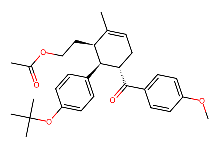
COc1ccc(C(=O)[C@H]2CC=C(C)[C@H](CCOC(C)=O)[C@@H]2c2ccc(OC(C)(C)C)cc2)cc144 个分子记录、20 个制备事件、33 条操作记录、4 条目标路径及 1 条消旋对照。保留总产率、粗中间体、ee 和未知立体中心；9/10/S7 的前序文献制备不在本文范围，待专家复核。
完整 JSON · 逐步 CSV · 路线序列 · SDF · HRMS 核对
| 事件 | 分子连接 | 报告产率 | Canonical reaction SMILES |
|---|---|---|---|
| E01 | phloroglucinol + methanol → S1 | S1: 50% | CO.Oc1cc(O)cc(O)c1>>COc1cc(O)cc(O)c1 |
| E02 | S1 → S2 + S3 | S2: 36%; S3: 36% | COc1cc(O)cc(O)c1>>COc1cc(O)c(Br)c(O)c1.COc1cc(O)cc(O)c1Br |
| E03 | S2 + MOMCl → 30 | 30: 71% | COCCl.COc1cc(O)c(Br)c(O)c1>>COCOc1cc(OC)cc(OCOC)c1Br |
| E04 | S3 + MOMCl → 31 | 31: 89% | COCCl.COc1cc(O)cc(O)c1Br>>COCOc1cc(OC)c(Br)c(OCOC)c1 |
| E05 | phloroglucinol + MOMCl → S4 | S4: 65% | COCCl.Oc1cc(O)cc(O)c1>>COCOc1cc(OCOC)cc(OCOC)c1 |
| E06 | S4 → 32 | 32: 84% | COCOc1cc(OCOC)cc(OCOC)c1>>COCOc1cc(OCOC)c(Br)c(OCOC)c1 |
| E07 | 9 + 10 → 11 | 11: 92% | C=C/C(C)=C/CCOC(C)=O.COc1ccc(C(=O)/C=C/c2ccc(OC(C)(C)C)cc2)cc1>>COc1ccc(C(=O)[C@H]2CC=C(C)[C@H](CCOC(C)=O)[C@@H]2c2ccc(OC(C)(C)C)cc2)cc1 |
| E08 | 11 → 14 | 14: 81% | COc1ccc(C(=O)[C@H]2CC=C(C)[C@H](CCOC(C)=O)[C@@H]2c2ccc(OC(C)(C)C)cc2)cc1>>COc1ccc(C(=O)[C@H]2CC=C(C)[C@H](CCOC(C)=O)[C@@H]2c2ccccc2)cc1 |
| E09 | 14 → 16 | 16: 98% | COc1ccc(C(=O)[C@H]2CC=C(C)[C@H](CCOC(C)=O)[C@@H]2c2ccccc2)cc1>>COc1ccc(C(=O)[C@H]2CC=C(C)[C@H](CC=O)[C@@H]2c2ccccc2)cc1 |
| E10 | 16 + S7 → 17 | 17: 81% | CC(C)S(=O)(=O)c1nnnn1-c1ccccc1.COc1ccc(C(=O)[C@H]2CC=C(C)[C@H](CC=O)[C@@H]2c2ccccc2)cc1>>COc1ccc(C(=O)[C@H]2CC=C(C)[C@H](CC=C(C)C)[C@@H]2c2ccccc2)cc1 |
| E11 | 17 + hydroxylamine + Boc2O → 27 + 26 | 27: 64% | CC(C)(C)OC(=O)OC(=O)OC(C)(C)C.COc1ccc(C(=O)[C@H]2CC=C(C)[C@H](CC=C(C)C)[C@@H]2c2ccccc2)cc1.NO>>COc1ccc(C(=O)N[C@H]2CC=C(C)[C@H](CC=C(C)C)[C@@H]2c2ccccc2)cc1.COc1ccc(N(C(=O)OC(C)(C)C)C(=O)[C@H]2CC=C(C)[C@H](CC=C(C)C)[C@@H]2c2ccccc2)cc1 |
| E12 | 27 + methanol → 1 | 1: 68% | CO.COc1ccc(N(C(=O)OC(C)(C)C)C(=O)[C@H]2CC=C(C)[C@H](CC=C(C)C)[C@@H]2c2ccccc2)cc1>>COC(=O)[C@H]1CC=C(C)[C@H](CC=C(C)C)[C@@H]1c1ccccc1 |
| E13 | 27 → 29 | 29: 74% | COc1ccc(N(C(=O)OC(C)(C)C)C(=O)[C@H]2CC=C(C)[C@H](CC=C(C)C)[C@@H]2c2ccccc2)cc1>>CC(C)=CC[C@H]1C(C)=CC[C@H](C=O)[C@H]1c1ccccc1 |
| E14 | 29 + 30 → S9 | S9: 65% | CC(C)=CC[C@H]1C(C)=CC[C@H](C=O)[C@H]1c1ccccc1.COCOc1cc(OC)cc(OCOC)c1Br>>COCOc1cc(OC)cc(OCOC)c1C(=O)[C@H]1CC=C(C)[C@H](CC=C(C)C)[C@@H]1c1ccccc1 |
| E15 | S9 → 2 | 2: 83% | COCOc1cc(OC)cc(OCOC)c1C(=O)[C@H]1CC=C(C)[C@H](CC=C(C)C)[C@@H]1c1ccccc1>>COc1cc(O)c(C(=O)[C@H]2CC=C(C)[C@H](CC=C(C)C)[C@@H]2c2ccccc2)c(O)c1 |
| E16 | 29 + 31 → S11 | S11: 90% | CC(C)=CC[C@H]1C(C)=CC[C@H](C=O)[C@H]1c1ccccc1.COCOc1cc(OC)c(Br)c(OCOC)c1>>COCOc1cc(OC)c(C(=O)[C@H]2CC=C(C)[C@H](CC=C(C)C)[C@@H]2c2ccccc2)c(OCOC)c1 |
| E17 | S11 → 3 | 3: 87% | COCOc1cc(OC)c(C(=O)[C@H]2CC=C(C)[C@H](CC=C(C)C)[C@@H]2c2ccccc2)c(OCOC)c1>>COc1cc(O)cc(O)c1C(=O)[C@H]1CC=C(C)[C@H](CC=C(C)C)[C@@H]1c1ccccc1 |
| E18 | 29 + 32 → S13 | S13: 85% | CC(C)=CC[C@H]1C(C)=CC[C@H](C=O)[C@H]1c1ccccc1.COCOc1cc(OCOC)c(Br)c(OCOC)c1>>COCOc1cc(OCOC)c(C(=O)[C@H]2CC=C(C)[C@H](CC=C(C)C)[C@@H]2c2ccccc2)c(OCOC)c1 |
| E19 | S13 → 4 | 4: 83% | COCOc1cc(OCOC)c(C(=O)[C@H]2CC=C(C)[C@H](CC=C(C)C)[C@@H]2c2ccccc2)c(OCOC)c1>>CC(C)=CC[C@H]1C(C)=CC[C@H](C(=O)c2c(O)cc(O)cc2O)[C@H]1c1ccccc1 |
| E20 | rac-14 → rac-16 | rac-16: 89% | COc1ccc(C(=O)[C@H]2CC=C(C)[C@H](CCOC(C)=O)[C@@H]2c2ccccc2)cc1>>COc1ccc(C(=O)[C@H]2CC=C(C)[C@H](CC=O)[C@@H]2c2ccccc2)cc1 |

COc1ccc(C(=O)[C@H]2CC=C(C)[C@H](CCOC(C)=O)[C@@H]2c2ccc(OC(C)(C)C)cc2)cc1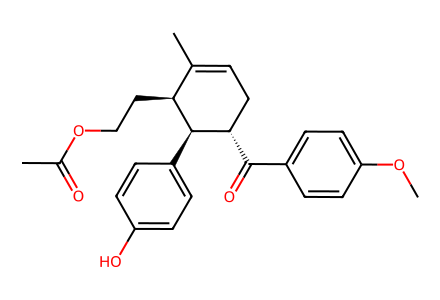
COc1ccc(C(=O)[C@H]2CC=C(C)[C@H](CCOC(C)=O)[C@@H]2c2ccc(O)cc2)cc1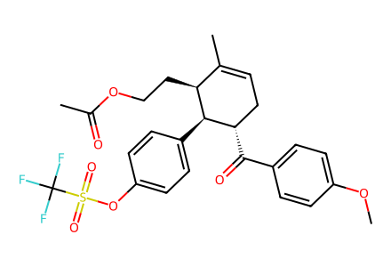
COc1ccc(C(=O)[C@H]2CC=C(C)[C@H](CCOC(C)=O)[C@@H]2c2ccc(OS(=O)(=O)C(F)(F)F)cc2)cc1
COc1ccc(C(=O)[C@H]2CC=C(C)[C@H](CCOC(C)=O)[C@@H]2c2ccccc2)cc1
COc1ccc(C(=O)[C@H]2CC=C(C)[C@H](CCO)[C@@H]2c2ccccc2)cc1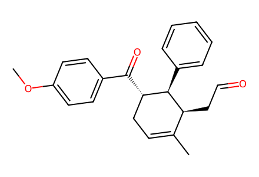
COc1ccc(C(=O)[C@H]2CC=C(C)[C@H](CC=O)[C@@H]2c2ccccc2)cc1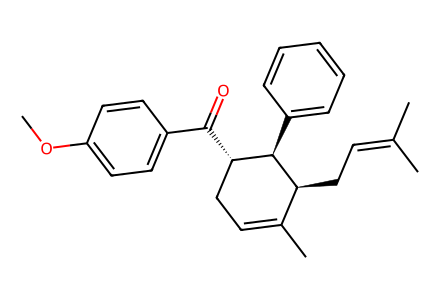
COc1ccc(C(=O)[C@H]2CC=C(C)[C@H](CC=C(C)C)[C@@H]2c2ccccc2)cc1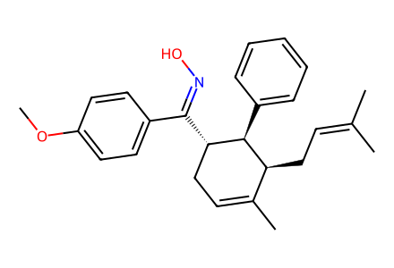
COc1ccc(C(=NO)[C@H]2CC=C(C)[C@H](CC=C(C)C)[C@@H]2c2ccccc2)cc1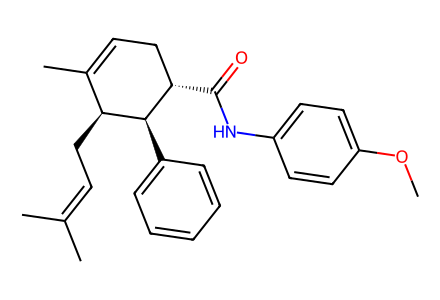
COc1ccc(NC(=O)[C@H]2CC=C(C)[C@H](CC=C(C)C)[C@@H]2c2ccccc2)cc1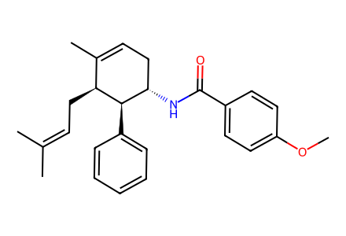
COc1ccc(C(=O)N[C@H]2CC=C(C)[C@H](CC=C(C)C)[C@@H]2c2ccccc2)cc1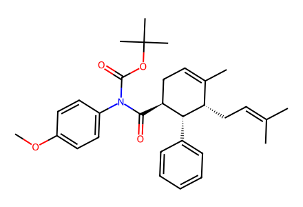
COc1ccc(N(C(=O)OC(C)(C)C)C(=O)[C@H]2CC=C(C)[C@H](CC=C(C)C)[C@@H]2c2ccccc2)cc1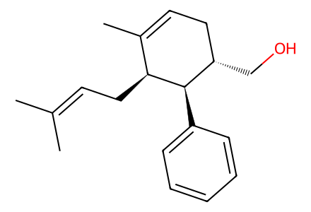
CC(C)=CC[C@H]1C(C)=CC[C@H](CO)[C@H]1c1ccccc1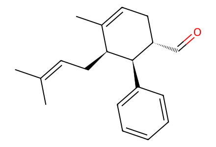
CC(C)=CC[C@H]1C(C)=CC[C@H](C=O)[C@H]1c1ccccc1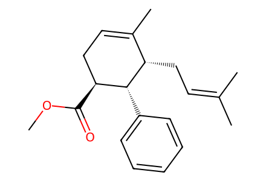
COC(=O)[C@H]1CC=C(C)[C@H](CC=C(C)C)[C@@H]1c1ccccc1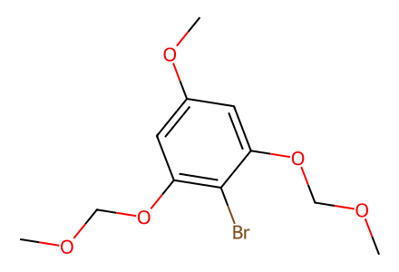
COCOc1cc(OC)cc(OCOC)c1Br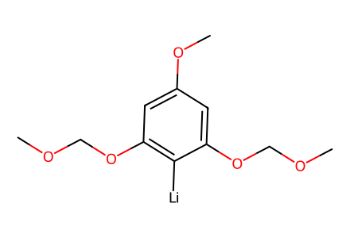
[Li][c]1c(OCOC)cc(OC)cc1OCOC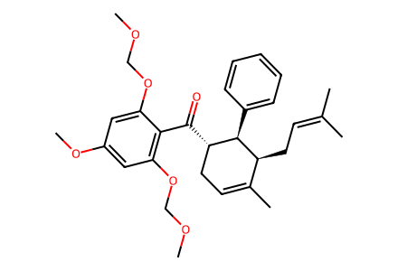
COCOc1cc(OC)cc(OCOC)c1C(=O)[C@H]1CC=C(C)[C@H](CC=C(C)C)[C@@H]1c1ccccc1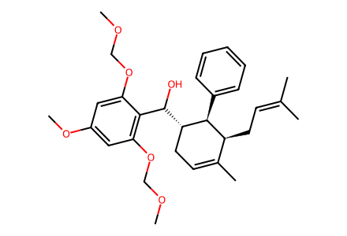
COCOc1cc(OC)cc(OCOC)c1C(O)[C@H]1CC=C(C)[C@H](CC=C(C)C)[C@@H]1c1ccccc1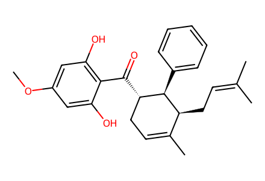
COc1cc(O)c(C(=O)[C@H]2CC=C(C)[C@H](CC=C(C)C)[C@@H]2c2ccccc2)c(O)c1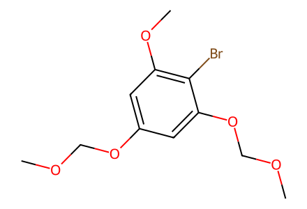
COCOc1cc(OC)c(Br)c(OCOC)c1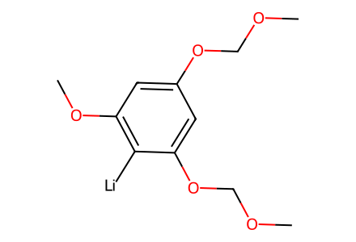
[Li][c]1c(OC)cc(OCOC)cc1OCOC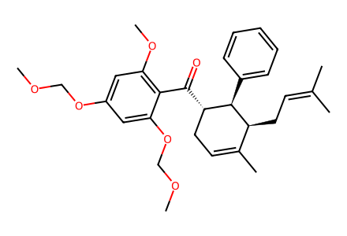
COCOc1cc(OC)c(C(=O)[C@H]2CC=C(C)[C@H](CC=C(C)C)[C@@H]2c2ccccc2)c(OCOC)c1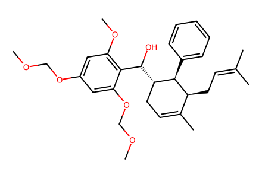
COCOc1cc(OC)c(C(O)[C@H]2CC=C(C)[C@H](CC=C(C)C)[C@@H]2c2ccccc2)c(OCOC)c1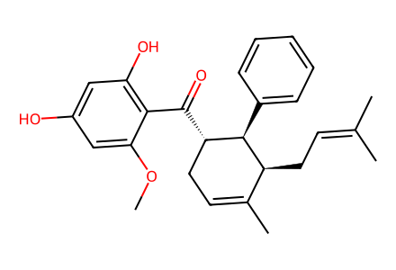
COc1cc(O)cc(O)c1C(=O)[C@H]1CC=C(C)[C@H](CC=C(C)C)[C@@H]1c1ccccc1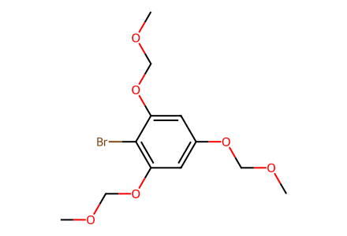
COCOc1cc(OCOC)c(Br)c(OCOC)c1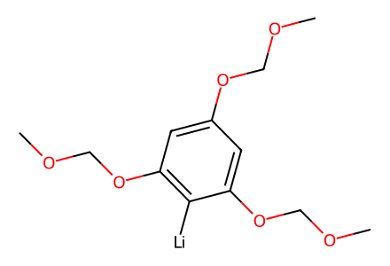
[Li][c]1c(OCOC)cc(OCOC)cc1OCOC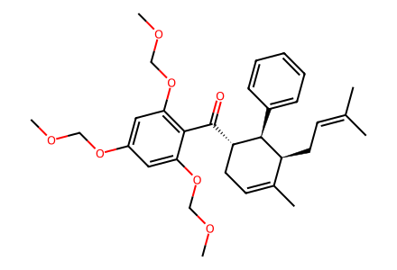
COCOc1cc(OCOC)c(C(=O)[C@H]2CC=C(C)[C@H](CC=C(C)C)[C@@H]2c2ccccc2)c(OCOC)c1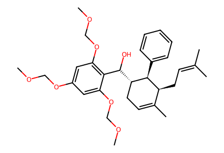
COCOc1cc(OCOC)c(C(O)[C@H]2CC=C(C)[C@H](CC=C(C)C)[C@@H]2c2ccccc2)c(OCOC)c1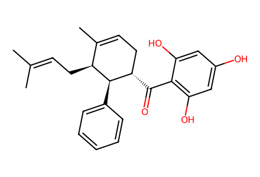
CC(C)=CC[C@H]1C(C)=CC[C@H](C(=O)c2c(O)cc(O)cc2O)[C@H]1c1ccccc1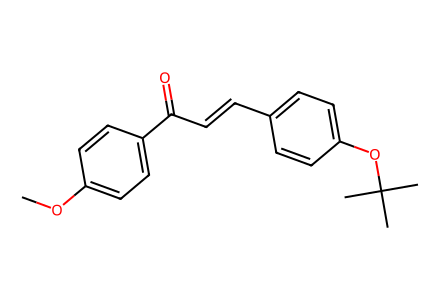
COc1ccc(C(=O)/C=C/c2ccc(OC(C)(C)C)cc2)cc1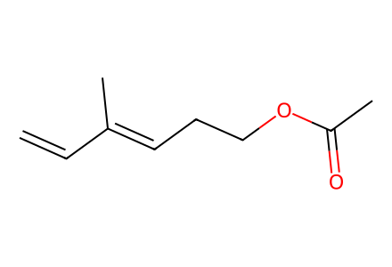
C=C/C(C)=C/CCOC(C)=O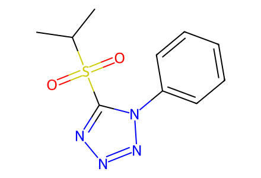
CC(C)S(=O)(=O)c1nnnn1-c1ccccc1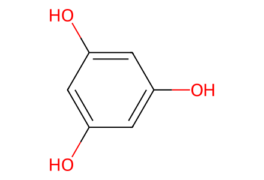
Oc1cc(O)cc(O)c1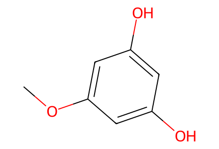
COc1cc(O)cc(O)c1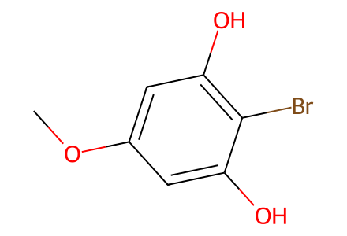
COc1cc(O)c(Br)c(O)c1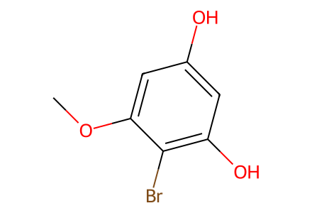
COc1cc(O)cc(O)c1Br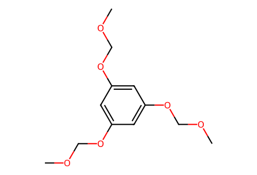
COCOc1cc(OCOC)cc(OCOC)c1
CO
COCCl
CC(C)(C)OC(=O)OC(=O)OC(C)(C)C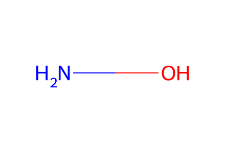
NO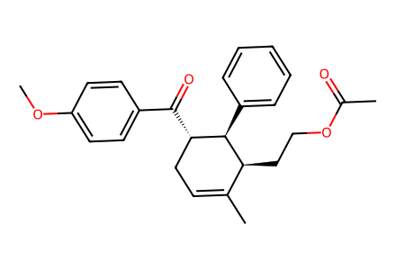
COc1ccc(C(=O)[C@H]2CC=C(C)[C@H](CCOC(C)=O)[C@@H]2c2ccccc2)cc1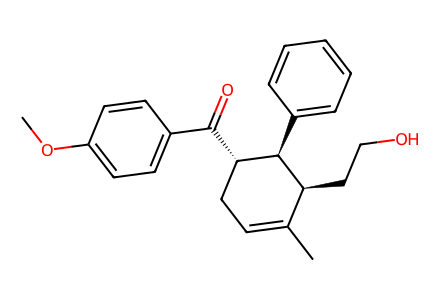
COc1ccc(C(=O)[C@H]2CC=C(C)[C@H](CCO)[C@@H]2c2ccccc2)cc1
COc1ccc(C(=O)[C@H]2CC=C(C)[C@H](CC=O)[C@@H]2c2ccccc2)cc1